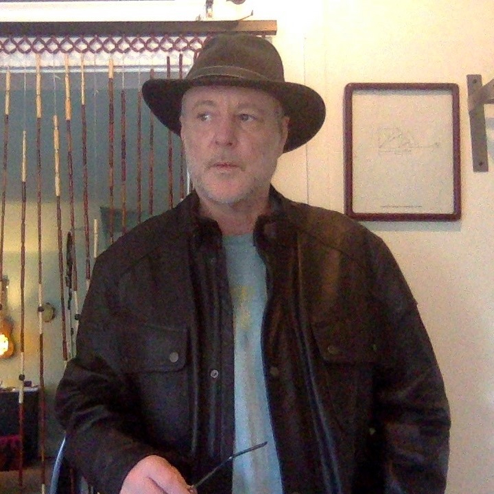

About Us
About Us

Ian Beardsley studied physics at The University of Oregon and worked in astronomy For four years at the state observatory, Pine Mountain Observatory in the high desert East of Bend, Oregon. His name appears on several papers in the Astrophysical Journal.
It is a purpose of biological life (C, N, O, H) to discover the properties of (P, B, Si) so it can make computing machines which are necessary to its survival.
Mathematical Structure by Ian Beardsley on Scribd
Equation Ai by Ian Beardsley on Scribd
Artificial Intelligence and Biological Life by Ian Beardsley on Scribd